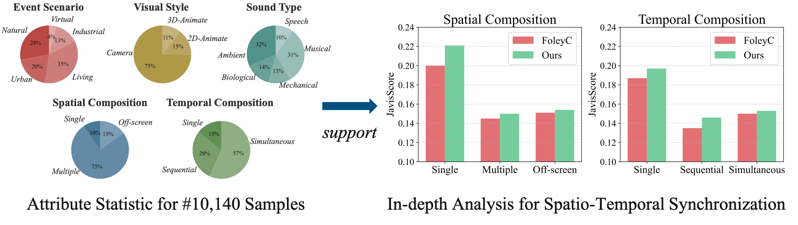
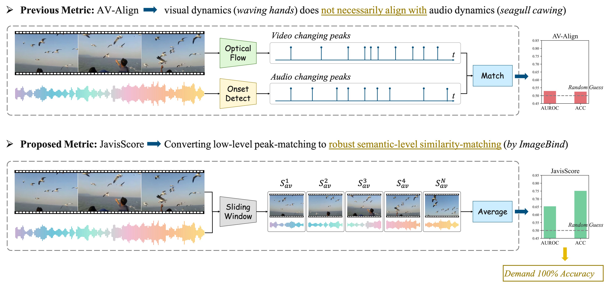

Technical Description
• Motivation
JAVG Requirements: (1) High-quality single-modality generation; (2) Fine-grained inter-modality synchronization.

Figure 1: Given the input text prompt, a JAVG system generates a spatial-temporally synchronized sounding video. The sounds align perfectly with the temporal progression of the actions.
- Spatial Synchronization. Specific objects (e.g., alien dog) in video shall make specific sounds (e.g., mechanical barking) in audio.
- Temporal Synchronization. Sound's starting and ending timestamp in audio shall align with event's happening and vanishing timestamp in video.
- Spatio-Temporal Synchronization. Different objects in video shall make different sounds in audio and perfectly start/end at corresponding timestamps.
• JavisDiT Architecture

Figure 2: JavisDiT is built on top of STDiT blocks with two branches for joint audio-video generation. Spatio-temporal priors and bidirectional across-attention are utilized to ensure synchronized generation.
- Overall Architecture. Video (frame sequence) and audio (mel-spectrogram) representations are unified as 4D tensors with shape of [B, T, S, C], processed by sequential spatial-temporal self-attention or cross-attention blocks to comprise the scalable STDiT architecture.
- Hierarchical Spatio-Temporal Prior. The coarse-grained st-prior is inherited from original text-encoder (T5-xxl), which encodes the overall souding-event description. The fine-grained st-prior is estimated from our proposed estimator, which infers to where and when this event will happen and end.
- Multi-Stage Training Pipeline. The training pipeline is divided into three stages: (1) audio pretraining: extending the video generation branch to a new audio generation branch with 788K audio-text pairs. (2) st-prior estimation: learning the hierarchical prior estimator by contrastive learning with various negative (asynchronized) audio-video construction strategies. (3) joint av-generation: training the interactive modules (ST-CrossAttn and BiCorssAttn) to empower synchronized JAVG, where modules learned in previous steps are frozen.
• JavisBench Benchmark
A strong generative model must ensure diverse video content, audio types, and fine-grained spatio-temporal synchronization. However, current JAVG benchmarks might lack diversity and robustness for comprehensive evaluation. For instance, AIST++ contains only 20 samples for human dancing, while Landscape comprises 100 entries on landscapes merely. To combat this shortcoming, we propose a more challenging benchmark named JavisBench, consisting of 10,140 samples from multiple data sources across various real-world scenarios. We also leverage Qwen-LLM families to annotate visual-audio attributes for each sample, including event scenario, visual style, sound type, and spatial-temporal composition for sounding events. We hope the hierarchical attribute annotations can support in-depth analysis for different JAVG scenarios, and inspire the community to derive more applicable JAVG models in real-world.

Figure 3: Large-scale and diversified JavisBench dataset supports in-depth spatio-temporal synchronization analysis.
JavisScore Metric
We have also noticed that AV-Align, the widely-adopted metric to evaluate synchronization degree of generated audio-video pairs, may struggle with complex scenarios (i.e., with multiple sounding events or subtle vi- sual movements) and produce misleading results. Therefore, we propose a more robust evaluation metric, namely JavisScore, to measure visual-audio synchro- nization in diverse, real-world contexts. We also provide a human-labeled dataset for quantitative evaluation for the accuracy and reliability of different synchronization metric, which contains 3,000 synchronized and asynchronized audio-video pairs from diverse data sources and scenarios. We look forward to a 100% perfect synchronization metric to greatly promote the development of the JAVG community.
Figure 4: Qualitative and quantitative comparison with previous AV-Synchronization metric.